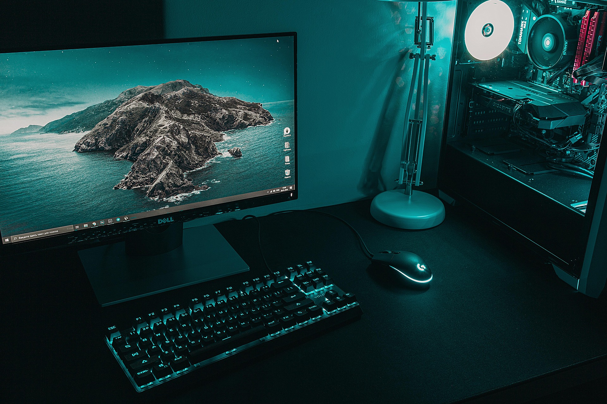

Tervetuloa Konemagia ja gurut Oy:n nettisivustolle!
Lauri Halttunen, 3.11.2026
Mikä on tällä hetkellä paras suunnitelma tietokoneen ostamiselle?

Olen koonnut monen vuoden tutkimisen jälkeen hyvän periaatteen,
jolla pääsee eteenpäin tietokonetta ostaessa.
Tässä oppaassa pyrin auttamaan tietokoneen valitsemisessa
ja siinä, miten omalle rahalle saa mahdollisimman paljon vastinetta.
Tietokoneen valitseminen voi olla vaikeaa, joten tämän ohjeen
kautta olen pyrkinyt tekemään siitä helpompaa.
Kaikista ensimmäisenä on tärkeää kysyä itseltään,
mihin tietokonetta tarvitsee. Kenties työkäyttöön,
pelaamiseen vai molempiin?
Tämän kysymyksen kautta on helpompi valita tietokoneen
ominaisuudet ja komponentit. On myös tärkeää miettiä,
tarvitseeko kannettavaa tietokonetta vai hoituvatko kaikki
tarpeet pöytätietokoneella.
Kannettavalla tietokoneella saa hoidettua suurimman osan
tavallisista tietokonetarpeista, mutta jos haluaa enemmän
suorituskykyä esimerkiksi pelaamiseen, videoiden renderöimiseen
tai muuhun raskaaseen työskentelyyn, pöytätietokone on
usein parempi ratkaisu samalla rahalla.
Toisena tärkeänä asiana on kysyä itseltään,
mikä on oma hintahaarukka. Tätä pohtiessa pitää ottaa
huomioon, että jos esimerkiksi haluaa pelata 4K-resoluutiolla
korkeilla virkistystaajuuksilla uusimpia pelejä,
pitää myös käyttää enemmän rahaa.
Sama pätee työskentelyyn. Jos työssä tarvitaan esimerkiksi
useita näyttöjä, paljon muistia tai tehokasta prosessoria,
kannattaa nämä asiat ottaa huomioon jo tietokonetta valittaessa.
Oletko valinnut omat tarpeesi ja sopivan hintahaarukan?
Hyvä! Nyt voit suunnitella oman koneesi komponentit.
300–500 euroa
Jos oma hintahaarukka on 300–500 euroa, kannattaa
ensisijaisesti harkita käytettyä tai kunnostettua
yrityskäyttöön suunniteltua kannettavaa tietokonetta.
Tällä hinnalla on vaikeaa saada uutta ja tehokasta
pöytätietokonetta, mutta käytettyjen tietokoneiden
markkinoilta voi löytää erittäin hyviä vaihtoehtoja.
Esimerkiksi Lenovon ThinkPad-, Dellin Latitude- ja
HP:n EliteBook-sarjat ovat harkitsemisen arvoisia.
Ne on suunniteltu yrityskäyttöön, joten niiden
näppäimistöt, rakenteet ja liitännät ovat usein
hyvällä tasolla.
Tässä hintaluokassa tietokone soveltuu hyvin
netin selaamiseen, opiskeluun, toimistotöihin,
videoiden katseluun ja kevyeen ohjelmointiin.
Pelaamiseen tämä hintaluokka ei ole paras mahdollinen,
mutta kevyemmät ja vanhemmat pelit toimivat
sopivalla tietokoneella.
Jos ostat käytetyn tietokoneen, kannattaa tarkistaa
erityisesti akun kunto, tallennustilan määrä,
keskusmuistin määrä ja laitteen yleinen kunto.
500–1 000 euroa
500–1 000 euron hintaluokassa löytyy jo huomattavasti
enemmän vaihtoehtoja. Tähän hintaan voi hankkia
hyvän kannettavan tietokoneen tai rakentaa
kohtuullisen pöytätietokoneen.
Jos tietokone tulee työkäyttöön, esimerkiksi opiskeluun,
ohjelmointiin tai tavalliseen toimistotyöskentelyyn,
kannattaa kiinnittää huomiota erityisesti prosessoriin,
keskusmuistiin, näyttöön ja akun kestoon.
Tässä hintaluokassa voi harkita esimerkiksi Applen
MacBook Neo -mallia, jos macOS-käyttöjärjestelmä
kiinnostaa. Sen 8 gigatavun keskusmuisti ja
256 gigatavun perustallennustila kuitenkin rajoittavat
sen soveltuvuutta raskaampaan työskentelyyn.
Windows- tai Linux-käyttöön käytetty Lenovo ThinkPad
on myös hyvä vaihtoehto.
Jos tietokone tulee pelik�äyttöön, kannattaa harkita
erillisellä näytönohjaimella varustettua pöytätietokonetta.
Tällä budjetilla voi päästä hyvään 1080p-pelaamiseen,
ja sopivilla komponenteilla myös 1440p-resoluutio
on mahdollinen joissakin peleissä.
Suorituskyky riippuu kuitenkin paljon pelistä ja
käytetyistä grafiikka-asetuksista.
Tässä hintaluokassa kannattaa myös muistaa,
että 16 gigatavua keskusmuistia on hyvä lähtökohta,
mutta 32 gigatavua tarjoaa enemmän liikkumavaraa.
1 000–2 000 euroa
1 000–2 000 euron hintaluokassa alkaa löytyä jo
todella hyviä tietokoneita. Tässä vaiheessa kannattaa
miettiä tarkemmin, haluaako kannettavan vai
pöytätietokoneen.
Jos tietokone tulee ensisijaisesti pelaamiseen,
pöytätietokone on usein järkevin vaihtoehto.
Tällä budjetilla voi hankkia tehokkaan prosessorin,
hyvän näytönohjaimen, 32 gigatavua DDR5-keskusmuistia
ja vähintään yhden tai kahden teratavun SSD-levyn.
Esimerkiksi AMD Ryzen 7 -sarjan prosessorit ja
NVIDIA GeForce RTX 5070 Ti tai AMD Radeon RX 9070 XT
ovat kiinnostavia vaihtoehtoja tämän hintaluokan
pelikoneeseen.
Tällaisella kokoonpanolla voi tavoitella erittäin
hyvää 1440p-pelisuorituskykyä. Monissa peleissä
voidaan päästä yli 100 FPS:n kuvataajuuksiin,
mutta lopputulos riippuu pelistä, asetuksista
ja näytönohjaimesta.
Myös 4K-pelaaminen on mahdollista, mutta uusimmissa
ja vaativimmissa peleissä grafiikka-asetuksia
voi joutua laskemaan tai käyttämään kuvan
skaalaustekniikoita.
Työkäyttöön tällä budjetilla saa jo erittäin
tehokkaita kannettavia ja pöytätietokoneita.
Esimerkiksi videoeditointi, kuvankäsittely,
ohjelmointi ja useiden sovellusten samanaikainen
käyttäminen onnistuvat hyvällä kokoonpanolla.
Jos tarvitset tietokonetta sekä pelaamiseen että
työskentelyyn, tämä hintaluokka tarjoaa mielestäni
erittäin hyvän tasapainon suorituskyvyn ja hinnan välillä.
2 000–3000 euroa
Jos oma budjetti on 2 000–3 000 euroa, päästään
jo todella tehokkaiden tietokoneiden maailmaan.
Tässä hintaluokassa kannattaa kiinnittää erityistä
huomiota komponenttien tasapainoon eikä käyttää
rahaa vain mahdollisimman kalliisiin osiin.
Pelaamiseen suosittelisin harkitsemaan esimerkiksi
AMD Ryzen 7 9800X3D -prosessoria tai muuta
tehokasta pelikäyttöön suunniteltua prosessoria.
Näytönohjaimen puolella NVIDIA GeForce RTX 5070 Ti
ja RTX 5080 ovat kiinnostavia vaihtoehtoja.
Myös AMD:n tehokkaammat Radeon-näytönohjaimet
kannattaa ottaa huomioon hinnan ja suorituskyvyn
perusteella.
Tällä budjetilla voi rakentaa erittäin tehokkaan
1440p-pelikoneen, jolla pääsee monissa peleissä
korkeisiin kuvataajuuksiin. Myös 4K-pelaaminen
korkeilla grafiikka-asetuksilla onnistuu hyvin,
erityisesti tehokkaalla näytönohjaimella.
Jos haluaa panostaa erityisesti 4K-pelaamiseen,
näytönohjaimeen kannattaa käyttää suurin osa
pelikoneen budjetista. Esimerkiksi RTX 5080
on tähän hintaluokkaan kiinnostava vaihtoehto,
jos sen hinta sopii kokonaisbudjettiin.
Työkäyttöön tämä hintaluokka tarjoaa myös
erittäin paljon mahdollisuuksia. Jos tekee esimerkiksi
videoeditointia, 3D-mallinnusta, ohjelmointia tai
muuta raskasta sisällöntuotantoa, kannattaa harkita
myös AMD Ryzen 9 -sarjan tai Intel Core Ultra 9
-sarjan prosessoreita.
Tällöin 64 gigatavua keskusmuistia voi olla
hyödyllinen lisä erityisesti raskaissa työtehtävissä.
Pelaamiseen 32 gigatavua riittää kuitenkin
useimmille käyttäjille hyvin.
Tallennustilan suhteen suosittelisin vähintään
kahta teratavua nopeaa NVMe SSD -tallennustilaa.
Suuret pelit, videotiedostot ja ohjelmistot
voivat viedä nopeasti paljon tilaa.
Jäähdytykseen ja virtalähteeseen kannattaa myös
panostaa. Tehokas tietokone tarvitsee laadukkaan
virtalähteen ja riittävän ilmankierron, jotta
komponentit toimivat luotettavasti ja lämpötilat
pysyvät hallinnassa.
Tässä hintaluokassa voi saada todella pitkäikäisen
tietokoneen, jonka suorituskyky riittää myös
tulevien vuosien vaativampiin peleihin ja työtehtäviin.
Mihin komponentteihin kannattaa erityisesti panostaa?
Tietokonetta hankkiessa on tärkeää ymmärtää,
mitä eri komponentit tekevät ja miten ne vaikuttavat
koko tietokoneen suorituskykyyn.
Ensimmäisenä kannattaa tarkastella näytönohjainta
(GPU), jos tietokone tulee pääasiassa pelaamiseen.
Näytönohjain vaikuttaa merkittävästi siihen,
kuinka korkeilla grafiikka-asetuksilla ja millä
resoluutiolla pelejä voidaan pelata.
Prosessori (CPU) puolestaan vastaa tietokoneen
laskentatehtävistä. Se on tärkeä erityisesti
raskaassa työskentelyssä, ohjelmoinnissa ja
korkeita kuvataajuuksia tavoittelevassa pelaamisessa.
Keskusmuisti (RAM) vaikuttaa siihen, kuinka paljon
tietokone pystyy käsittelemään samanaikaisesti.
Nykyään suosittelisin useimmille käyttäjille
vähintään 16 gigatavua, mutta 32 gigatavua on
hyvä tavoite erityisesti pelaamiseen.
Tallennustilassa kannattaa suosia SSD-levyä.
NVMe SSD on nopea vaihtoehto, joka tekee
tietokoneen käynnistämisestä ja ohjelmien
avaamisesta sujuvaa.
Emolevyn (Motherboard) valinnassa pitää varmistaa,
että se on yhteensopiva prosessorin ja keskusmuistin
kanssa. Lisäksi kannattaa tarkistaa, että siinä
on tarpeeksi liitäntöjä ja laajennusmahdollisuuksia.
Virtalähteen (PSU) kohdalla ei kannata säästää
liikaa. Laadukas virtalähde antaa komponenteille
tasaisen virransyötön ja auttaa varmistamaan
tietokoneen luotettavan toiminnan.
Viimeisenä kannattaa huomioida kotelo ja jäähdytys.
Hyvä ilmankierto auttaa pitämään komponenttien
lämpötilat kurissa ja voi myös vähentää tuulettimien
melua.
Kannettava vai pöytätietokone?
Tämä on yksi tärkeimmistä kysymyksistä tietokonetta
ostaessa.
Kannettava tietokone on hyvä valinta, jos tarvitset
laitetta opiskeluun, töihin tai matkustamiseen.
Sen suurimpia etuja ovat liikkuvuus, pieni koko
ja se, että näyttö, näppäimistö ja akku ovat
valmiiksi mukana.
Pöytätietokone puolestaan tarjoaa yleensä enemmän
suorituskykyä samalla rahalla. Lisäksi sen
komponentteja on helpompi päivittää tulevaisuudessa.
Jos esimerkiksi näytönohjain ei enää riitä uusimpiin
peleihin, sen voi vaihtaa tehokkaampaan ilman,
että koko tietokonetta tarvitsee uusia.
Pöytätietokone onkin mielestäni paras vaihtoehto
sellaiselle henkilölle, joka haluaa mahdollisimman
paljon suorituskykyä ja käyttää tietokonetta
pääasiassa samassa paikassa.
Kannattaako tietokone rakentaa itse vai ostaa valmiina?
Tietokoneen rakentaminen itse voi olla erittäin
hyvä vaihtoehto, jos komponentit ovat tuttuja
tai haluaa oppia lisää tietokoneiden toiminnasta.
Itse rakentamalla pystyy valitsemaan jokaisen
komponentin omien tarpeiden mukaan. Lisäksi
komponenttien hinnat voi vertailla eri kauppojen
välillä, jolloin kokonaisuudesta voi saada
paremman hinta-laatusuhteen.
Valmiiksi rakennettu tietokone on puolestaan
helpompi vaihtoehto henkilölle, joka ei halua
käyttää aikaa komponenttien valintaan ja
tietokoneen kokoamiseen.
Jos haluaa custom-tietokoneen, mutta ei halua rakentaa sitä itse, voi myös maksaa yhtiölle joka tekee sen rakennuksen asiakkaan puolesta. Tätä Konemagia ja gurut Oy tarjoaa, ja se on hyvä vaihtoehto, jos haluaa varmistaa, että kaikki komponentit ovat yhteensopivia ja tietokone toimii moitteettomasti.
Valmiskoneen kohdalla kannattaa kuitenkin
tarkistaa tarkasti, mitä komponentteja koneessa
todella on. Pelkkä tehokas prosessori tai
näytönohjain ei takaa hyvää kokonaisuutta,
jos esimerkiksi virtalähde, jäähdytys tai
emolevy ovat heikkolaatuisia.
Mielestäni itse rakentaminen on hyvä vaihtoehto,
jos haluaa oppia tietokoneista enemmän.
Jos taas haluaa päästä mahdollisimman helpolla,
valmiskone voi olla järkevä ratkaisu.
Muista se, että älä osta enempää kuin tarvitset
Tietokoneen ostamisessa tärkeintä ei ole se,
kuinka paljon rahaa siihen käyttää, vaan se,
kuinka hyvin tietokone vastaa omia tarpeita.
Jos käytät tietokonetta lähinnä opiskeluun,
netin selaamiseen ja tavallisiin toimistotöihin,
et tarvitse useiden tuhansien eurojen konetta.
Jos taas pelaat vaativia pelejä, käsittelet
suuria videotiedostoja tai teet muuta raskasta
työtä, tehokkaampaan tietokoneeseen sijoittaminen
voi olla järkevää.
Oma suositukseni on, että ennen ostamista
kannattaa vertailla useita vaihtoehtoja,
tutustua komponenttien suorituskykyyn ja
katsoa riippumattomia testejä.
Älä myöskään unohda näyttöä, näppäimistöä,
hiirtä ja muita oheislaitteita. Niillä on
suuri vaikutus siihen, kuinka mukavaa
tietokoneen käyttäminen lopulta on.
Hyvin suunniteltu tietokone palvelee käyttäjäänsä
useita vuosia, eikä siihen tarvitse käyttää
mahdollisimman suurta summaa rahaa.
Toivottavasti tästä oppaasta oli apua
seuraavan tietokoneesi valitsemisessa!
Tietoa minusta
Olen Lauri, opiskelija Laureassa. Olen kiinnostunut IT-alasta, ja toivon oppivani siita lisaa.
Oma kiinnostus IT-alaan
IT-alan kiinnostus alkoi jo nuorena, kun olin ylakoulussa ja olin kurssilla, joka opetti IT-alan taitoja ja mahdollistamaan eri tavoitteita. Sielta kurssilta koin, että oma kiinnostus on IT-alalla, varsinkin tyoskentelemaan tietokoneiden kanssa.
Yhteystiedot
Saat minut kasiksi sahkopostiosoitteella: lauri@esimerkki.com ja puhelinnumerolla 040 123 4567.